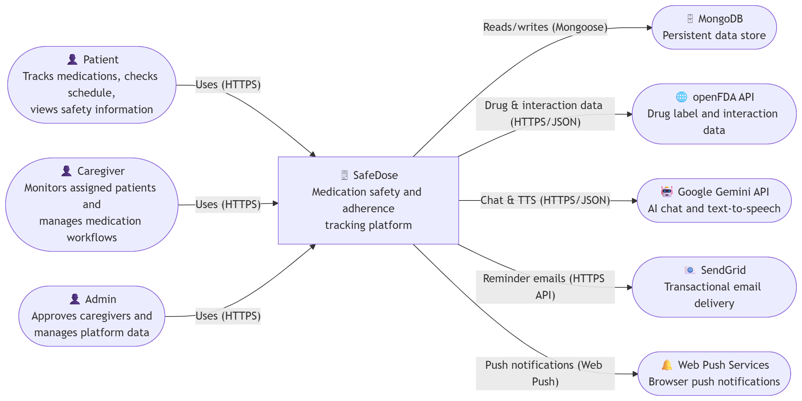
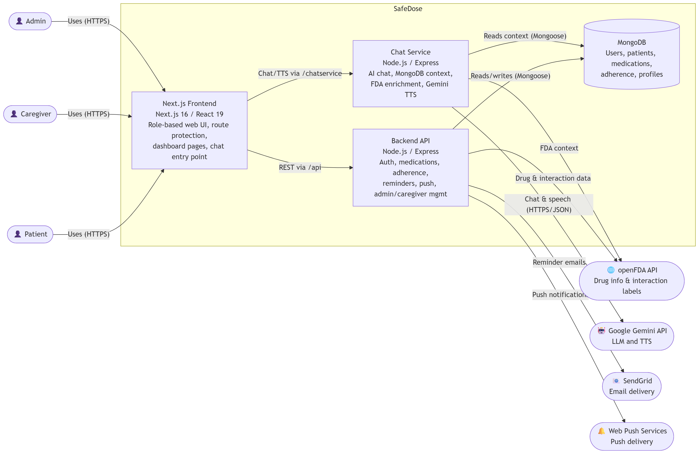
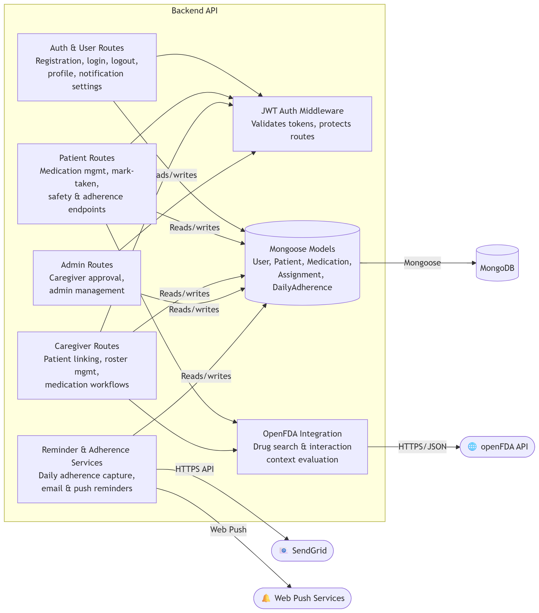

C4 Model for SafeDose
Project Overview
Project Name: SafeDose - Medication Safety and Adherence Tracker
Team: SafeDose
Purpose: SafeDose helps patients and caregivers manage medication schedules, track adherence, review potential safety risks, and receive reminders through a web application supported by backend and AI-assisted services.
C1 - System Context
Who are the users?
- Patient: manages personal medications, checks schedules, tracks adherence, and reviews medication safety information.
- Caregiver: monitors assigned patients, manages medication records on their behalf, and reviews adherence.
- Admin: approves caregiver accounts and manages platform users.
What systems talk to SafeDose?
- MongoDB: stores users, patient records, caregiver assignments, medications, and adherence data.
- openFDA API: provides drug label and interaction-related medication information.
- Google Gemini API: powers SafeDose AI chat and text-to-speech generation.
- SendGrid: sends reminder and adherence-related emails.
- Web Push Service: delivers browser push notifications using VAPID keys.
What problem is the system solving?
SafeDose reduces medication risk and improves adherence by combining role-based medication management, reminder delivery, adherence tracking, caregiver oversight, and AI-assisted medication guidance in one platform.
System Context Diagram

If this does not load in local file mode, run a simple local server and open this HTML through http://localhost.
C2 - Container Diagram
What are the major parts?
- Next.js Frontend: role-based UI for patients, caregivers, and admins; includes route protection and browser-side interactions.
- Backend API (Express): handles authentication, profile management, medication workflows, caregiver/admin operations, adherence logic, email reminders, and push notifications.
- Chat Service (Express): handles AI chat requests, user-context lookups, FDA context enrichment, and Gemini text-to-speech.
- MongoDB Database: stores application domain data.
- External Services: openFDA, Gemini, SendGrid, and Web Push infrastructure.
How do they communicate?
- Users access the Next.js frontend through the browser over HTTPS.
- The frontend calls the Backend API through /api rewrites and protected application flows.
- The frontend accesses the Chat Service through /chatservice routing.
- Both backend services connect to MongoDB using Mongoose.
- The backend API calls openFDA, SendGrid, and Web Push services.
- The chat service calls Gemini and also uses MongoDB plus FDA-based context sources when building responses.
Container Diagram

C3 - Components Diagram
Focused Container
This component view focuses on the Backend API container because it contains most of the core business logic for SafeDose.
Major components inside the Backend API
- Auth and User Routes: registration, login, logout, profile, notification preferences.
- Patient Routes: medication CRUD, mark-as-taken flow, OpenFDA interaction checks, adherence views.
- Caregiver Routes: patient linking, caregiver-side medication management, adherence review.
- Admin Routes: caregiver approval and system management.
- Adherence and Reminder Services: daily adherence capture, scheduled reminder logic, email/push delivery.
- Data Models: Mongoose models for users, patients, medications, caregiver requests, and daily adherence.
Component Diagram

C4 - Code Mapping
Folder Structure and Key Files
Frontend
- safedose-frontend/app/: application pages for patient, caregiver, admin, login, registration, and shared layout structure.
- safedose-frontend/proxy.js: route protection and role-based redirects using JWT validation on the edge runtime.
- safedose-frontend/app/components/: reusable UI such as chat entry, notification bell, and dashboard components.
- safedose-frontend/app/context/AuthContext.js: authentication state handling for the UI.
- safedose-frontend/next.config.mjs: rewrites frontend requests to backend and chat-service endpoints.
Backend API
- safedose-backend/src/index.js: Express app bootstrap, route registration, web-push setup, and reminder scheduling logic.
- safedose-backend/src/routes/auth.js: account creation and login/logout behavior.
- safedose-backend/src/routes/user.js: user profile and notification preference endpoints.
- safedose-backend/src/routes/patient.js: patient medication flows, schedule handling, adherence, and OpenFDA interaction endpoints.
- safedose-backend/src/routes/caregiver.js: caregiver patient management and related medication operations.
- safedose-backend/src/routes/admin.js: approval and administrative routes.
- safedose-backend/src/lib/openfda.js: OpenFDA search and interaction helper functions.
- safedose-backend/src/lib/captureAdherence.js: daily adherence capture and follow-up notification logic.
- safedose-backend/src/lib/sendEmail.js: SendGrid wrapper used by reminders and alerts.
- safedose-backend/src/models/: Mongoose schemas for domain entities.
Chat Service
- safedose-chat-service/src/index.js: chat service bootstrap and route mounting.
- safedose-chat-service/src/routes/chat.js: AI chat endpoint with role-aware MongoDB and FDA context assembly.
- safedose-chat-service/src/routes/tts.js: Gemini-based text-to-speech endpoint.
- safedose-chat-service/src/lib/gemini.js: Gemini client calls for chat, web-grounded responses, and drug extraction.
- safedose-chat-service/src/lib/mongoContext.js: builds user-specific database context for chat prompts.
- safedose-chat-service/src/lib/fdaContext.js: builds FDA label context used in AI responses.
Deployment and Routing
- safedose-gateway.yaml: gateway definition for external traffic entry.
- safedose-routes.yaml: HTTP route rules that split traffic between backend and chat-service containers.
- safedose-backend/backend-deploy.yaml and safedose-chat-service/chat-deploy.yaml: deployment configuration for backend services.
Summary
SafeDose is implemented as a multi-container web platform with a Next.js frontend, an Express backend API for core application workflows, and a separate Express chat service for AI features. MongoDB stores the core domain data, while openFDA, Gemini, SendGrid, and Web Push services extend the platform with drug safety data, AI assistance, reminders, and notifications.